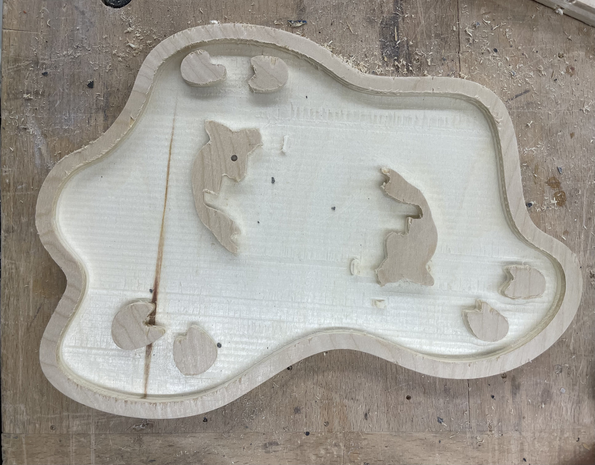
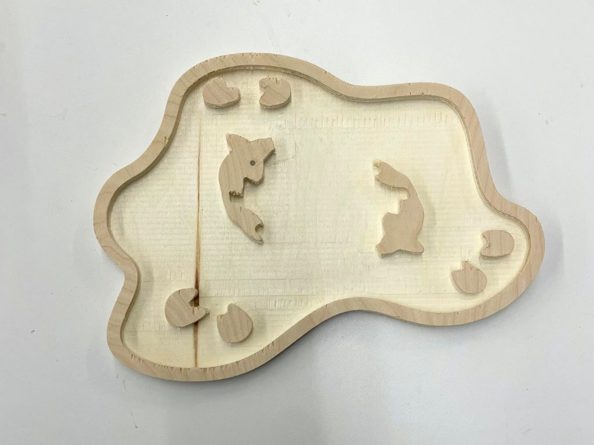
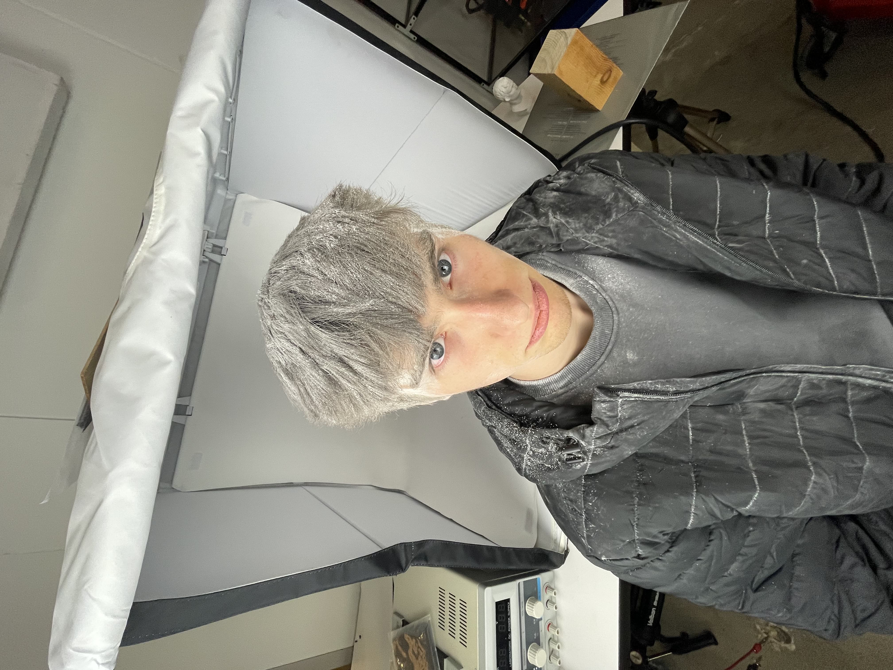
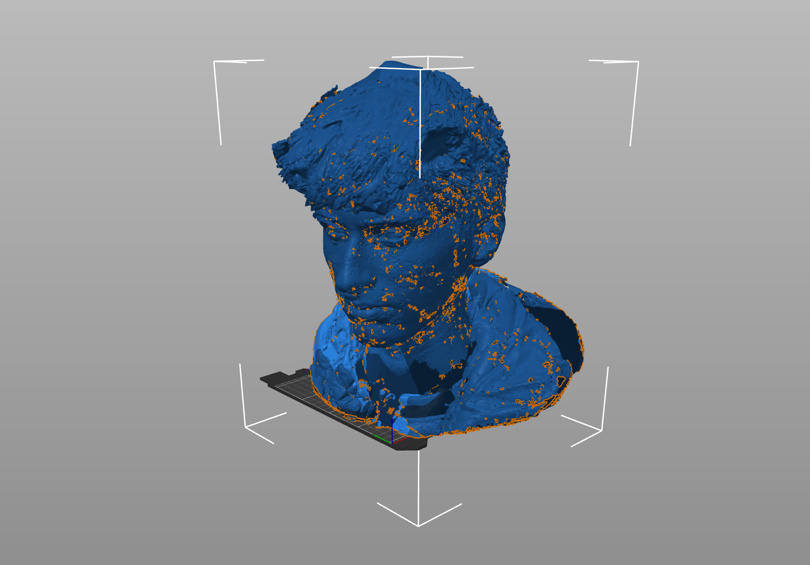
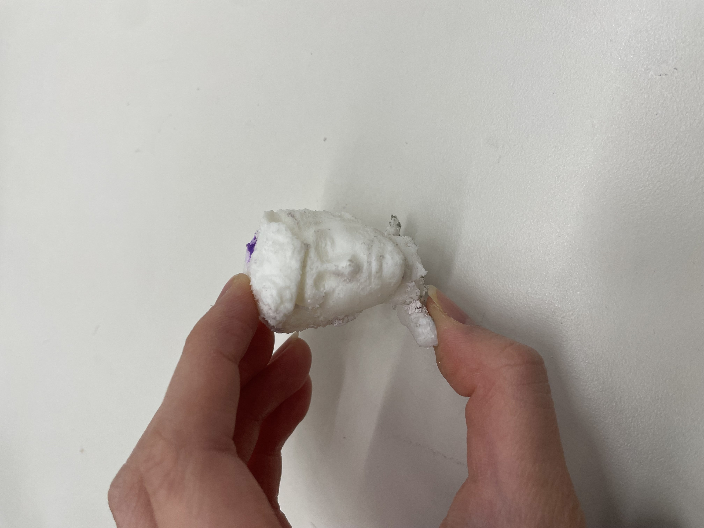
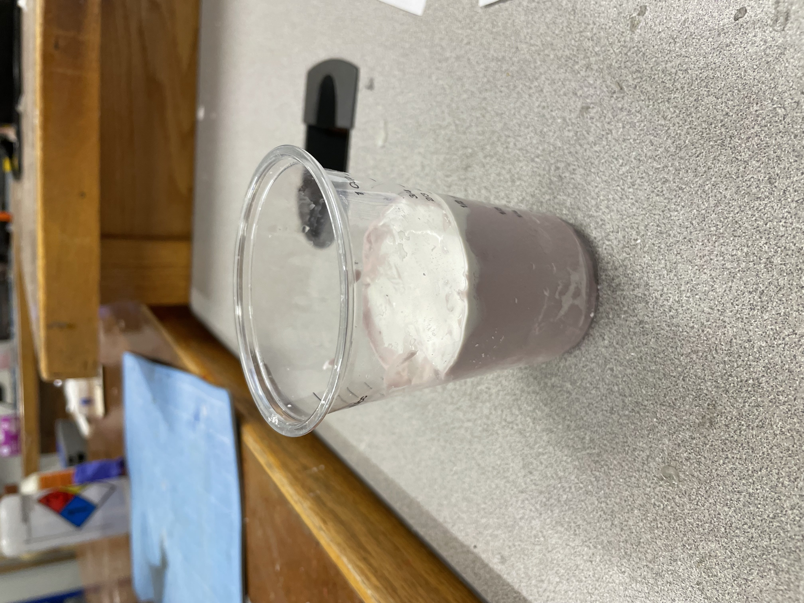
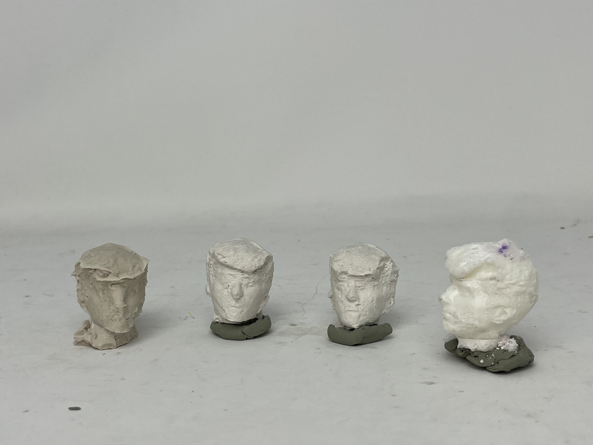

<div class="textcontainer">
<p class="margin"> </p>
<h3>Week 8: CNC Milling</h3>
<h4>Assignment: Make Something With CNC</h4>
<p> For this week's assignment, I wanted to make something I could use. I landed on making a jewelry tray.
My inspiration for this week was an organic design. I went with a koi pond design.
</p>
<p> To create this project, I first modeled my design on Fusion.</p>
<iframe
src="https://a360.co/3WvybT2"
width="800"
height="600"
frameborder="0"
allowfullscreen>
</iframe>
<p> To do this, I drew the the shape of the pond, and then imported vector images of the koi fish onto my sketch. After, I
drew the other elements of the pond using Fusion's sketch tools.
</p>
<p> Next, I loaded my design into the CNC software and prepared it to be cut. After doing so, I noticed some issues with
extra lines on vector image fish, so, I went back and cleaned up my Fusion sketch. Then, I was ready to start CNCing.
</p>

<p> After sanding: </p>

<p class = "margin"></p>
<p> Reflections: </p>
<p> Overall, I was happy with how the pond came out. I liked how the wood layering allowed for the water to be a different color
then the other elements in the design. In future iterations, I would probably scale the internal elements in the pond up a
little to allow them to cut a little cleaner (especially the water ripples, which I ended up sanding off) and smooth some of
the edges on the fin/tail design. I would also like to add more elements into the pond. </p>
<p class = "margin"></p>
<h4>Molding and Casting</h4>
<p> For the molding and casting portion of this week, I wanted to mold and cast someone's head in plaster (inspired by the busts in Berg).
To this, I would first need a scan of someone's head. Luckily, I knew just the right person to ask: Jack (who did not need convincing).
As warned during 3D printing week, we found that it was difficult to pick up hair on the LIDAR scanner.
</p>
<p> After having already scanned my objects from week 5, I didn't think it was the texture that was the problem. I thought it could be
the way that hair reflects light that caused the problem. So, we needed a way to matify Jack's hair...
</p>
<h5>The cornstarching</h5>

<p> Now that Jack's hair was matified, we could scan his whole head! The scan file ended up being super huge and I had to post-process it on
a PC (the makerspace computer could not handle it). I ended up using three different softwares to try to post-process the huge file (RevoScan,
Blendr, and one other I will link if I can find it again.</p>

<p> After extensive post-processing, the scan was ready to be printed. The print came out pretty well, except I accidentally decapitated the
bottom of the print while removing it from the mold (shown in the next step). </p>

<p> I created the mold with Alja-Safe and casted it using plaster. I ended up doing a couple iterations to try to improve the quality of the cast.
Some notes on molding and casting: tap things out to remove air bubbles and be careful when removing your object from the Alja-Safe mold
(attach something SECURELY to it to make it easier to remove). </p>

<p class = "margin"></p>

<p class = "margin"></p>
<h4>Reflections:</h4>
<p> This was fun, but I would probably not do it again. Creating a scan of Jack's head took many scans (and rescans) to assemble
a model. It also took a lot of time (and compute) to post-process the scan to a usable size. From there, the molding and casting
wasn't too bad, but I did find it hard to capture as much detail as I would like. Part of this is probably caused by the damage to
the mold caused by removing the object. In the future, I think it would be worth looking into different molding methods (maybe silicon?)
and possibly printing a slightly larger model to create the mold from.
</p>
</div>